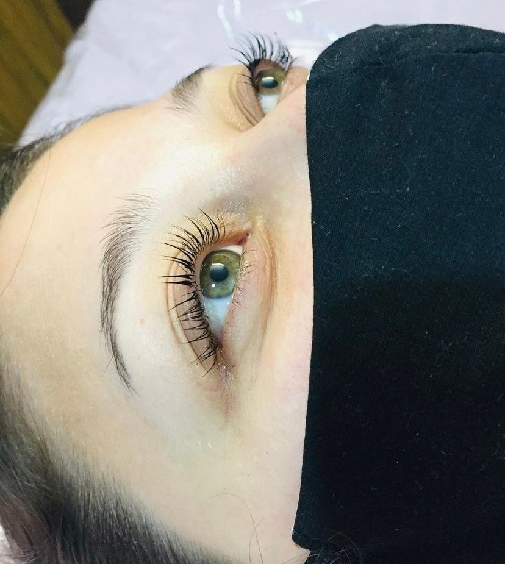
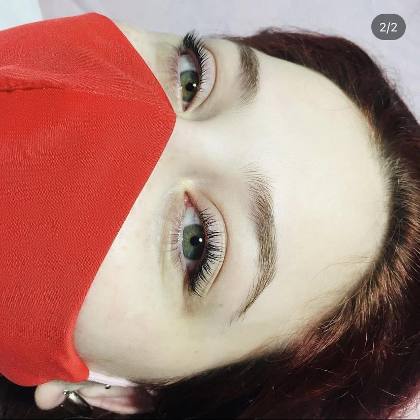

NUESTROS SERVICIOS
1 Lifting de pestañas nutritivo
Es un tratamiento estético y no invasivo a través del cual podemos conseguir que las pestañas se vean más largas y curvadas de una manera NATURAL ya que se realiza con nuestro propio pelo. Viene acompañado de un producto adicional para nutrir y brindar mas duración al Lifting.
2 Laminado de cejas
También conocido como brow lamination, es un tratamiento no invasivo que busca darle dirección y definición a las cejas. Permite realinear los vellos con la forma que estés buscando, dandole un aspecto prolijo y uniforme.
TRABAJOS

Nuestros servicios
TRABAJOS

Nuestros servicios
Nuestros servicios

Nuestros servicios
Nuestros servicios
Nuestros servicios
Nuestros servicios
REPRESENTANTES

|
|
| Nazareth Nardone: Encargada del lifting de pestañas |
Analia Isaias: Encargada del laminado de cejas |
INFORMACIÓN